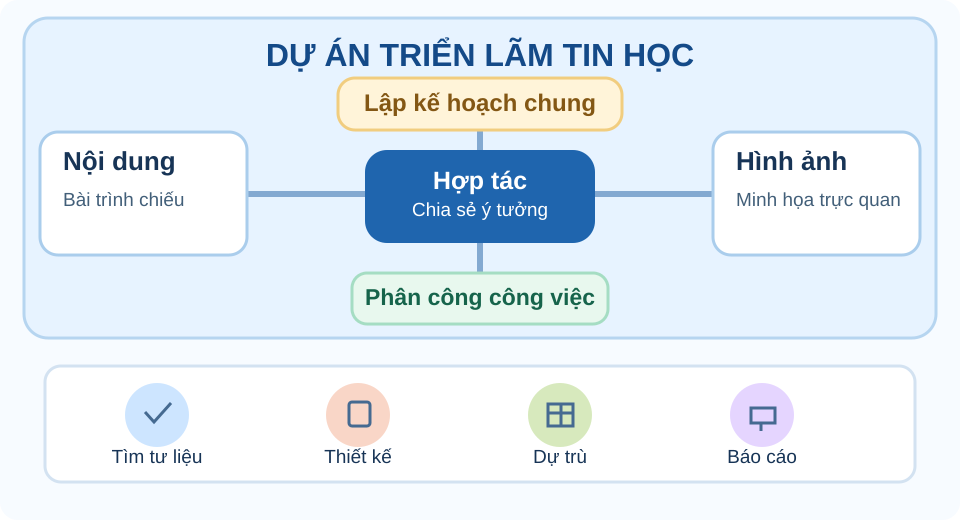
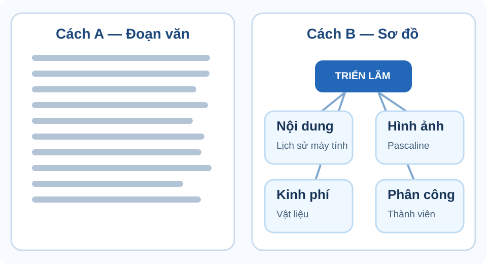
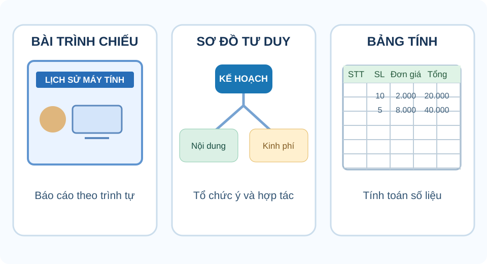
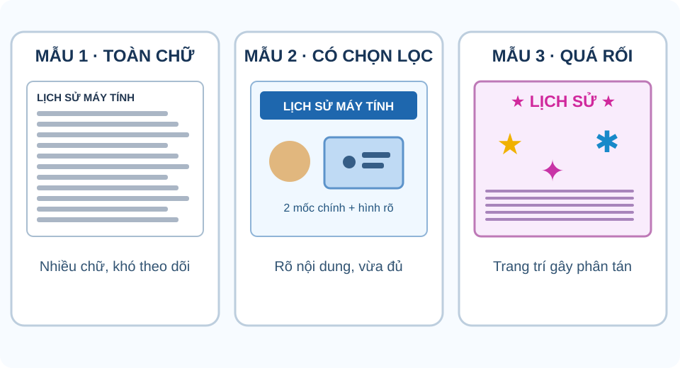
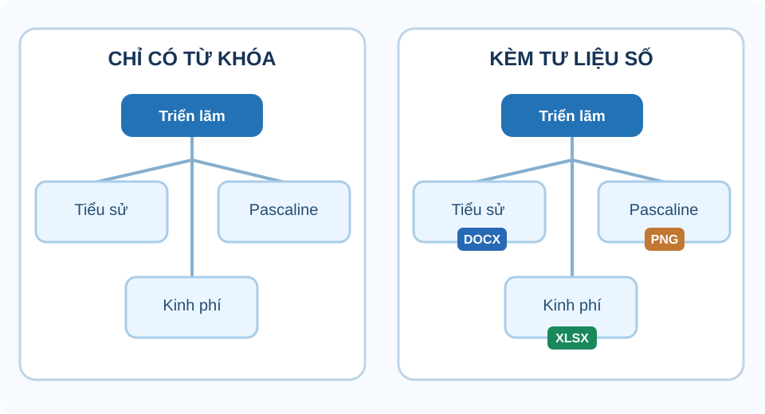
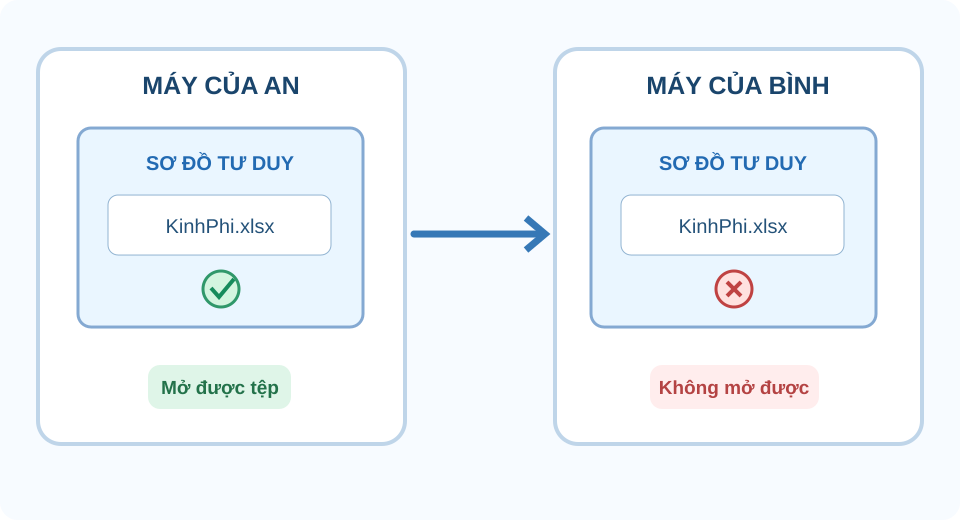

TIN HỌC 9 · BÀI 7—TRÌNH BÀY THÔNG TIN TRONG TRAO ĐỔI VÀ HỢP TÁC
Tiến độ: 0/12
Hướng dẫn sử dụng bài giảng
Chọn số trang ở cột bên trái hoặc dùng nút Trước / Tiếp theo. Đọc nhiệm vụ, tự chọn đáp án và nhấn Kiểm tra hoặc Gợi ý ở từng hoạt động. Trang đã xem được đánh dấu hoàn thành; bài làm, lựa chọn và tiến độ được lưu tự động trên chính trình duyệt, kể cả khi nhấn F5.
Ở trang 7, chọn từng nhánh sơ đồ để xem bản mô phỏng nội dung các tệp DOCX, PNG, XLSX và video. Đây là tư liệu minh họa tích hợp, không phải tệp tải xuống. Trang 10–11 cho phép viết kế hoạch nhóm và tự đánh giá. Nút In phiếu in báo cáo học tập theo dữ liệu đã nhập.
Ứng dụng không cần tài khoản và không gửi thông tin đến máy chủ. Nếu dùng máy chung, không nhập thông tin nhạy cảm; nhấn Làm mới khi muốn xóa dữ liệu bài học trên máy này. Nếu nhúng vào Google Sites, giáo viên nên để khung nhúng đủ rộng để trình chiếu dễ đọc.
Chủ đề 4 · Ứng dụng tin học
TỰ HỌC CÓ HƯỚNG DẪN · 45 PHÚT
Bài 7. Trình bày thông tin trong trao đổi và hợp tác
Một nhóm muốn tổ chức “Triển lãm tin học”. Làm thế nào để mọi người hiểu ý tưởng, tìm được tài liệu và phối hợp hiệu quả?

Chọn công cụ
Bài trình chiếu hay sơ đồ tư duy?
Kết hợp tư liệu
Ảnh, video, biểu đồ, bảng tính
Hợp tác
Chia sẻ, đính kèm và phân công
Nhiệm vụ: Tự quan sát, đọc học liệu, thử nghiệm, giải thích và hoàn thiện một kế hoạch nhóm nhỏ. Có thể học cá nhân hoặc theo cặp.
Chỉ lưu trên thiết bị đang sử dụng.
01 · Khởi động · 5 phút
Cần trình bày thông tin như thế nào?
Cùng là kế hoạch “Triển lãm tin học”. Hãy quan sát hai cách thể hiện dưới đây.
Cách A – Đoạn văn
Lớp 9 dự kiến tổ chức một triển lãm tin học nhằm giới thiệu lịch sử máy tính. Nhóm cần tìm tư liệu về máy tính cơ học, thu thập hình ảnh máy Pascaline, chuẩn bị thông tin về Charles Babbage và giới thiệu những phát minh nổi bật. Các bạn cũng phải tính kinh phí in ấn, chuẩn bị gian trưng bày và xác định ai chịu trách nhiệm phần nội dung, hình ảnh, tài chính và báo cáo. Mọi thành viên cần trao đổi và cập nhật tiến độ công việc trước ngày triển lãm.
Cách B – Sơ đồ khái quát
TRIỂN LÃM TIN HỌC
Nội dung
Lịch sử máy tính
Hình ảnh
Pascaline, nhân vật
Kinh phí
In ấn, vật liệu
Phân công
Thành viên, tiến độ

Hình minh họa sự khác nhau giữa thông tin dạng đoạn văn và dạng sơ đồ.
Em chọn cách nào để phân công công việc nhanh hơn?
Câu hỏi mở rộng: Nếu muốn đứng trước lớp giới thiệu lịch sử máy tính theo từng mốc thời gian, liệu sơ đồ có luôn là cách thuận tiện nhất?
02 · Tự học kiến thức · 12 phút
Ba công cụ – ba nhiệm vụ
Đọc phần kiến thức bài 7 trong SGK, sau đó đối chiếu ba tình huống dưới đây. Không cần học thuộc ngay: hãy suy luận từ mục đích sử dụng.

▤
Bài trình chiếu
Giới thiệu thông tin theo trình tự, phục vụ báo cáo, thuyết trình; có thể kết hợp chữ, hình, biểu đồ và video.
◇
Sơ đồ tư duy
Thể hiện cấu trúc và mối liên hệ giữa các ý, hỗ trợ phát triển ý tưởng và phân chia nhiệm vụ.
▦
Bảng tính
Phù hợp với số liệu và tính toán, chẳng hạn dự trù kinh phí của dự án. Đây là công cụ hỗ trợ.
Ghi chú tự học: Không có một công cụ tốt nhất cho mọi tình huống. Có thể kết hợp nhiều công cụ trong cùng dự án.
Kiến thức được tổ chức theo KHBD Bài 7; phần giải thích về bảng tính là ví dụ ứng dụng hỗ trợ phân biệt công cụ.
02 · Thử thách tự kiểm tra
Chọn đúng công cụ cho từng việc
Với mỗi tình huống, chọn công cụ phù hợp nhất. Sau đó nhấn Kiểm tra để nhận lời giải thích.
02 · Quan sát và nhận xét
Hình ảnh, biểu đồ, video: dùng sao cho hợp lí?

Mẫu nào phù hợp nhất để người nghe dễ theo dõi nội dung?
Em tự rút ra 3 nguyên tắc:
Minh họa phải đúng mục đích, đúng nội dung.
Hình ảnh rõ nét, chữ dễ đọc, thông tin vừa đủ.
Sử dụng nguồn tư liệu phù hợp; không lạm dụng hiệu ứng.
03 · Tự khám phá · 15 phút
Sơ đồ tư duy số có thể chứa những gì?
Quan sát sơ đồ của nhóm triển lãm. Bấm vào từng nhánh để khám phá loại tư liệu liên quan. Sau đó thử trả lời các câu hỏi ở trang kế tiếp.
TRIỂN LÃM TIN HỌC
Tư liệu của nhánh được chọn
Hãy chọn một nhánh trên sơ đồ.
Các tệp ở đây là bản mô phỏng để học mà không cần Internet; không phải tệp đính kèm thật từ SGK. Video là bảng phân cảnh minh họa, không phát video bên ngoài.
Đã khám phá 0/4 nhánh
03 · Rút ra kiến thức
Vì sao không chép tất cả lên sơ đồ?

Chỉ có từ khóa: giúp nhìn tổng thể, chưa có nội dung chi tiết.
Có tệp đính kèm: vẫn gọn, có thể mở tài liệu khi cần.
Theo em, ích lợi quan trọng nhất của đính kèm hoặc liên kết tệp là gì?
Phân biệt: Đính kèm là đưa tệp vào sản phẩm nếu phần mềm hỗ trợ; liên kết là trỏ tới vị trí tệp hoặc trang web. Khi chia sẻ cần kiểm tra tệp, đường dẫn và quyền truy cập.
03 · Tình huống thực tế
Gửi sơ đồ rồi, sao bạn không mở được tệp?

Nhóm An gửi sơ đồ cho Bình
Bình xem được các nhánh nhưng bấm vào KinhPhi.xlsx thì không mở được. Nhóm phải xử lí thế nào?
Em dự đoán nguyên nhân
Kiểm tra tệp đã được gửi kèm chưa, liên kết còn đúng không và Bình có quyền mở tệp hay không. Có thể gửi tệp trực tiếp hoặc cập nhật liên kết chia sẻ phù hợp.
Liên hệ AI: Nếu AI gợi ý sơ đồ hoặc nội dung, HS phải kiểm tra, chọn lọc và chỉnh sửa, không mặc định mọi thông tin đều chính xác.
04 · Luyện tập và vận dụng · 11 phút
Thử thách nhanh: Em đã hiểu bài chưa?
Chọn đáp án cho mỗi câu. Hệ thống sẽ phản hồi và giải thích sau khi em nộp.
04 · Vận dụng sáng tạo
Em là thành viên ban tổ chức triển lãm
Thử thách nhóm: Xây dựng một kế hoạch ngắn cho “Triển lãm tin học”. Phân chia nhiệm vụ, chọn tư liệu phù hợp và nêu cách trao đổi kết quả.
Dữ liệu được lưu trên thiết bị, không nộp trực tuyến cho GV. Có thể dùng “In phiếu” để in hoặc lưu PDF.
04 · Tự đánh giá và phản biện
Nhóm em đã làm tốt điều gì?
Dựa vào kế hoạch ở trang trước, đánh dấu điều nhóm đã thực hiện được. Đừng đánh dấu chỉ để đạt số lượng.
Đã đạt 0/4 tiêu chí
Gợi ý trao đổi: Một nhóm nêu lựa chọn của mình; nhóm khác chỉ ra điểm hợp lí và một đề xuất cải tiến. GV ưu tiên đánh giá cách lập luận, không chỉ hình thức.
05 · Tổng kết · 2 phút
Ba điều em cần nhớ
01
Đúng công cụ
Bài trình chiếu: trình bày theo trình tự. Sơ đồ tư duy: tổ chức ý và hỗ trợ hợp tác.
02
Đúng tư liệu
Hình ảnh, biểu đồ, video phải hỗ trợ nội dung, vừa đủ, rõ ràng và có nguồn phù hợp.
03
Chia sẻ hiệu quả
Đính kèm hoặc liên kết giúp tra cứu chi tiết; nhớ kiểm tra tệp và quyền truy cập.
Về nhà: chuẩn bị tư liệu có nguồn rõ ràng để thực hành trình bày thông tin. Không cần công khai thông tin cá nhân.
Trang 1/12
PHIẾU HỌC TẬP – TIN HỌC 9, BÀI 7
Trình bày thông tin trong trao đổi và hợp tác
Học sinh:Nhóm:
1. Kiến thức và kết quả tự học
Chọn công cụ phù hợp: | Luyện tập:
Giải pháp khi liên kết bị lỗi:
2. Kế hoạch triển lãm
Mục
Nội dung
Chủ đề
Phân công
Tư liệu
Chia sẻ, góp ý
3. Tự đánh giá và cải tiến
Tiêu chí đạt:
Điều cần cải thiện:
Điều đã hiểu:
Điều thắc mắc:
Phiếu tạo tại trình duyệt. Nội dung do HS tự nhập, không phải kết quả đánh giá của giáo viên.